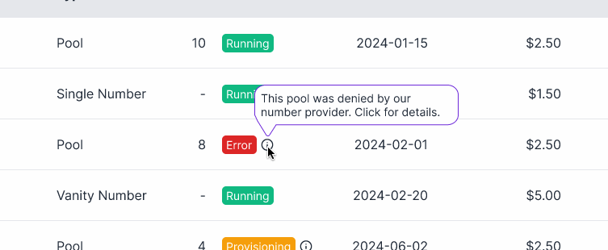
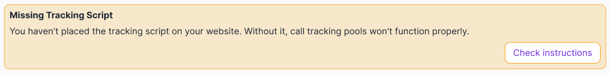
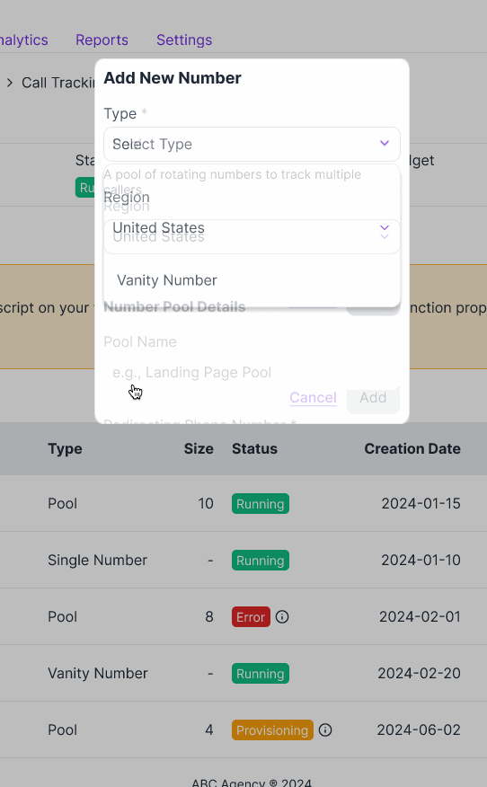
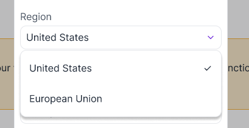
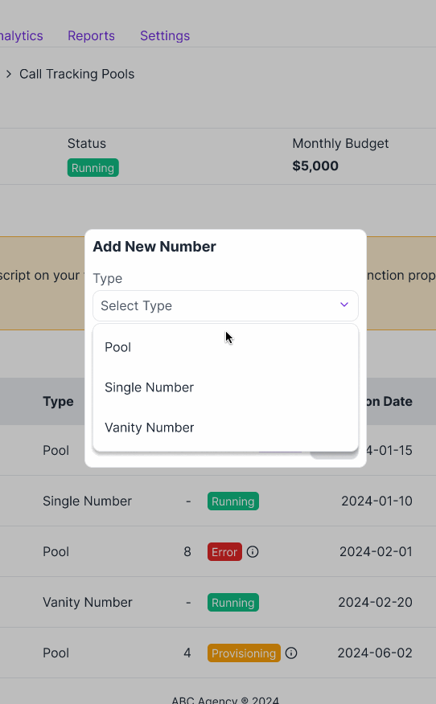
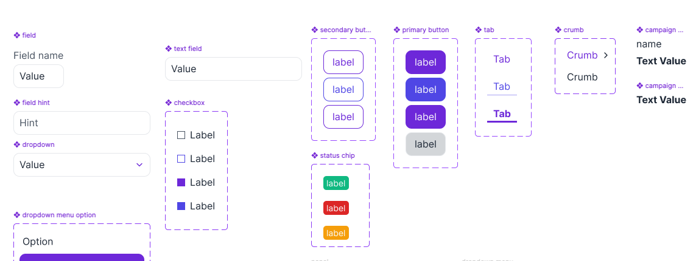
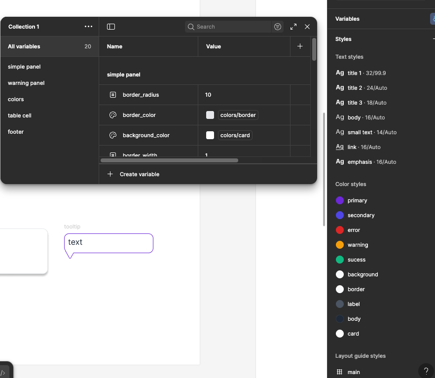
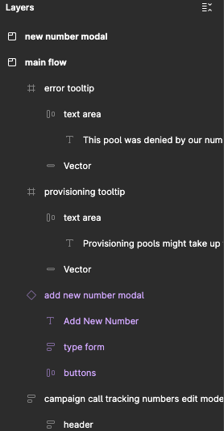

Call Tracking Number Pools
7 min read
As part of a SaaS digital marketing campaign manager platform I worked on, one feature revolved around keeping track how many people who saw our ads actually clicked on them and gave the business a call. As expected from a platform that has been more than ten years on the market, our call tracking system had evolved into a complex maze that both our internal team and clients struggled to navigate efficiently. The challenge here was to create an interface that makes this complex telephony infrastructure intuitive for marketers who just want to track which ads drive calls—without requiring them to understand the technical implementation.
The Attribution Problem
Old System: Single Call Tracking Numbers (CTN) When multiple users clicked the same ad, they all saw the same tracking number So if a user clicked an ad on Monday but called on Friday, the cookie had often expired. The system couldn't attribute that call to the original ad, resulting in:
- Inaccurate campaign ROI reporting on dashboard
- Clients couldn't determine which ads drove calls accurately
- Perceived wasted ad spend on campaigns that seemed ineffective but actually worked
New System: Number Pools The redesign introduced pools of tracking numbers. Each user who clicked an ad received their own unique number, stored in the platform.
Benefit: Even if the user called a week later, the platform's attribution algorithm could match the unique number to the original ad click. Additionally, pools could have any quantity of CTNs, meaning that campaigns with low traffic that required accurate call attribution could create small pools to optimize their budget allocation (since the platform charged a flat rate per CTN).
Project Discovery
Working within established parameters, We identified several key constraints:
- Maintaining compatibility with existing call tracking infrastructure
- Ensuring seamless integration with our current number provisioning system
- Meeting a tight Q2 2024 implementation deadline
- Supporting legacy tracking methods for existing clients
Research & Problem Analysis
The primary research involved qualitative analysis of support tickets and a heuristic evaluation of the existing call tracking interface.
Measurement Methodology:
Before implementation:
- 15 related to number pool management (one month before work on the feature started)
- Established categories: Setup issues, capacity problems, assignment confusion, general questions
Post-Implementation:
- One month the feature went live, tracked 10 number management tickets—30% reduction from baseline
- *Assignment tickets temporarily increased as users explored new bulk assignment features, but those stopped after QBR where clients were informed of the new features (from single tacking numbers to pools)
The most significant reduction came from setup-related tickets, confirming the onboarding redesign addressed the highest-impact pain point.
These metrics were gathered through our internal analytics tools and JIRA tickets, with final validation completed after the release including the new feature went live.
1. Hidden Provisioning Delays Issue: Adding a tracking number triggered a backend process with our third-party provider that could take up to 24 hours before the number went live.
User impact:
- Clients created campaigns and launched ads immediately
- Numbers weren't active yet—calls went unanswered for up to a day
- No visible indication in the UI that provisioning was in progress
- Support received many tickets from clients claiming no attribution when it was due to either not placing the script or expecting to see call attribution immediately
Heuristic violated: Visibility of system status

Figure 1 New interface shows when new pools are on provisioning, how long it might take and a result change of state to either Error or Running
2. Script Installation Confusion Issue: Call tracking required a JavaScript snippet on the client's website. Our direct clients (marketing agencies) often forgot to inform their end clients (businesses) about this requirement.
User impact:
- Agencies set up tracking numbers successfully
- Numbers were live but didn't appear on websites (script not installed)
- Calls went to business's regular number instead—tracking failed
- Took days to diagnose because the symptom ("no tracked calls") had multiple causes
Heuristic violated: Error prevention, help and documentation
Design implication: Setup flow must include clear script installation instructions and verification status

Figure 2 New flow includes clear script installation instructions and verification status
3. Silent Provisioning Failures Issue: Sometimes number provisioning failed (provider API timeout, invalid area code, etc.). Since provisioning took up to a day, users didn't notice failures immediately.
User impact:
- User created number on Monday, assumed it was processing
- By Tuesday, they'd forgotten about it
- Campaign launched Wednesday—no tracking
- When users finally noticed, error message was generic: "Provisioning failed"
Heuristic violated: Error prevention, help users recover from errors
Design implications:
- Proactive failure notifications (on report/issues dashboards)
- Error messages must explain what went wrong and offer next steps
- Retry mechanism instead of forcing users to start over
- Clear information scent: see issue on dashboard → click to go to campaign → info ribbon on CTN section with issue description and recovery suggestion + info label outlining the process

Figure 3 Additionally to showing errors on the main list, the new prototype also includes more error states and clear instructions when creating new CTNs
4. International Provider Complexity Issue: Platform operated in multiple countries, using different call tracking providers (e.g., Twilio for US, different provider for EU -not our real providers-). Each provider had different required fields.
User impact:
- US users saw fields for "area code" and "state"
- EU users saw "country code" and "region"
- Some providers required additional fields (vanity number support, local vs. toll-free)
- Interface showed all possible fields, creating clutter and confusion
Heuristic violated: Recognition rather than recall, aesthetic and minimalist design

Figure 4 Interface dynamically adapts based on user's region by default, but allows changing it
5. Feature Overload in Creation Screen Issue: The "Create Tracking Number" screen tried to accommodate every possible use case in one form.
Options included:
- Vanity numbers (spell a word: 1-800-FLOWERS)
- External number import (tracking a number from a physical billboard)
- Pool creation (the new feature)
- Single number creation (legacy method)
- Geographic preferences
- Whisper messages
User impact:
- Users could use a simple pool creation (our data scientist told us that creating pools with 4 numbers would cover the needs of 90% of our campaigns)
- Users didn't know which fields were required vs. optional
- Cognitive overload which most likely contributed to flow abandonment
Heuristic violated: Aesthetic and minimalist design, flexibility and efficiency
Design implication:
- Simplify workflows (pool creation) from edge cases (vanity numbers)
- Progressive disclosure: show advanced options only when needed
- Clearly define what each type is for

Figure 5 The new interface only shows the complexity needed for each case, depending on user input
Research Synthesis
The research revealed a pattern: the interface prioritized technical completeness over user clarity. Every backend complexity was exposed in the UI.
Priority problems to solve: 1. Make provisioning status visible (don't hide delays) 2. Guide users through script installation (prevent silent failures) 3. Surface errors proactively with recovery actions (don't wait for users to notice) 4. Simplify the creation flow (separate pool creation from other cases)
These insights directly informed the redesigned onboarding wizard and dashboard.
Design System & Components
The platform already had a component library in Figma, which provided the foundation for the redesign.
Existing Component Library
The design system included:
- Button variants (Primary/Secondary with states)
- Form inputs (Text fields, dropdowns, toggles)
- Status indicators (Success/Warning/Error badges)
- Typography scale and color tokens

Figure 6 Example of Figma components

Figure 7 Example of Figma styles and variables
How I Used the Library
Rather than building from scratch, I:
1. Adapted Existing Patterns
- Added status badges to include capacity-specific states
- Applied form input components to the new tacking phone number modal
3. Maintained Consistency
- All new components followed existing spacing system (8px grid)
- Used semantic color tokens from the library
- Matched interaction patterns (hover states, focus indicators)

Figure 8 A recreation of the resulting flow can be found here
This approach allowed rapid iteration while ensuring the new feature felt native to the platform, not like a separate product bolted on.
Deliverables and Outcomes
The project resulted in several key deliverables:
- Redesigned number pool management interface
- Streamlined setup wizard for new pool creation
- Enhanced monitoring dashboard
Key performance indicators showed significant improvements:
- 30% reduction in number management-related support tickets during Q3 2024
- 95% positive feedback from beta testing participants